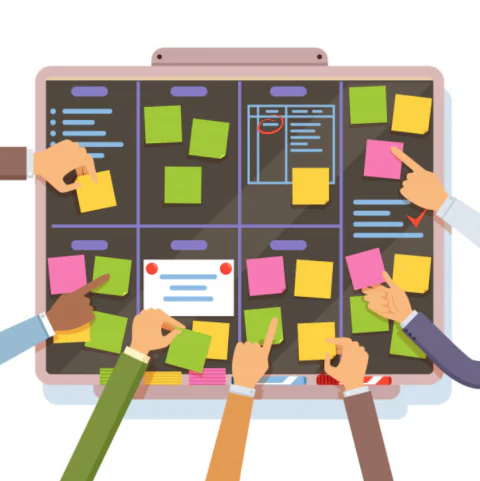

Our Workshops.
Mindful Scrolling: Recognize and Reset
Learn how to identify the triggers of doomscrolling and replace them with intentional habits.
This workshop equips you with practical techniques to regain control over your screen time.
Duration: 1 Hour
Format: Online

Build a personalized plan to reduce your dependence on digital media without feeling disconnected.
Creating a Digital Detox Plan
Build a personalized plan to reduce your dependence on digital media without feeling disconnected.
Explore strategies for setting boundaries, scheduling screen-free moments, and fostering meaningful offline activities.
Duration: 1.5 Hours
Format: Online or In-Person
Finding Joy Beyond the Scroll
Reignite your curiosity and creativity by discovering fulfilling alternatives to endless scrolling.
This interactive workshop guides you in exploring hobbies, engaging with your community, and practicing gratitude.
Duration: 2 Hours
Format: In-Person